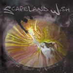

| Artist: | Scapeland Wish |
| Title: | The Ghost Of Autumn |
| Label: | self produced |
| Length(s): | 7? minutes |
| Year(s) of release: | 2003 |
| Month of review: | [08/2003] |
| 1) | Misty's Cage | 9.15 |
| 2) | The Highway | 5.40 |
| 3) | Reflection | 5.52 |
| 4) | Fever Dream | 7.01 |
| 5) | Ostrich Alternative | 5.04 |
| 6) | The Ghost Of Autumn | 7.40 |
| 7) | Inner Space | 7.24 |
| 8) | Nemo | 4.49 |
| 9) | The Willow Song | 7.57 |
| 10) | Fading Light | 9.30 |
| 11) | Autumn | 2.51 |
The Highway is easier going, with acoustic strumming guitar, and an organ setting in. The music has elements of Hogarth era Marillion in addition to the Enchant feel. In the middle we get a keyboard solo, with some really nice bombast and nicely intertwining lines. Then the Americana slide guitar comes in. All in all a bouncy track with the vocals on the high side and some nice keyboard solos and some organ abrewing.
Reflection is a step upward, it seems. The beginning is very orchestral with some great sensitive singing. The Hogarth reference becomes a bit stronger here, especially the vocal melody, not as much the voice, which is a bit lower. Later backing vocals and organ set in, resulting in a less restful passage, but soon we are back to the tapestry of electronics and acoustic guitar. Very good.
With Fever Dream we open in jazzy fashion with laid back guitar and drums. The Enchant song orientedness returns with a song about love. All in all a bit too straightforward, although the melodies are good and varied. Subdued and laid back with some nioce guitar bits in the middle and organ setting in at two thirds. The song becomes a bit more active here. We close with a vocl section.
The bass dominates Ostrich Alternative, an all-out instrumental with bouncy rhythm and some fast paced guitar work. One might think of La Villa Strangiato at times, here, but not up to that level. Only at the end do keyboards enter the picture for a bit of melodic bombast.
The title track finds us more or less halfway this album. There is something of Echolyn in this track, mainly because of the vocal harmonies. The music tends to plod on, but it does have some rich sounding keys which fill it up at times. In the instrumental middel section the music becomes quite forceful although it does maintain the same gait. Quite nice that. It is at these moments, when the band departs from the ordinary. Towards the end, the vocal passages take a turn for ehm well maybe Yes, in a sense. Only for a short while, then the music dies down and fires up again, but slowly with atmospheric guitar lines and a strong bass presence. I was thinking of Rush here. More to this song than seems at first glance.
We continue then with Inner Space, opening slowly with wah-wah guitar. Distortion is present on this one, but the other instruments remain on the safe side. The vocal part is quite distinctive. It is sung almost as if spoken, but still has plenty of melodic twists. Very well sung. The instrumental side becomes a bit more forceful along the way, and percussive as well. Strong blues leanings and strong on feel. The noisy guitar comes back too, the guitar solo fits in well.
Nemo opens with atmospheric keyboards and guitar, adding a strong simple backbeat. The guitar is now more noisy and meandering while keys bleep in the back. I guess we are in for an instrumental here again. Later the song powers up with some rhythm guitar as well.
Opening with military drums, The Willow Song also features warm organ, a quirky bass sound, slow building up to the melodic verses. The vocal harmonies are strong here again. There is a certain optimism in here, something which you can also find in the music of Spock's Beard, although the likeness musically is not so strong. We see the return of the ghost of autumn, at least lyrically. The instrumental section is a good, nicely orchestralm, we haven't heard that yet, moving right into a good guitar solo.
Fading Light is the longest track on the album. After something like a Christma song opening and the vocalist singing something akin to what the Beatles sang on Across The Universe (jay guru devah or something). The next part is low key, as the song slowly evolves. Lots of vocals, and good ones, especially when the power and emotion comes through more.
Autumn is a rather short and low-key acoustic guitar instrumental. Oh wait we get a few vocals in the final few seconds. Not an instrumental after all.